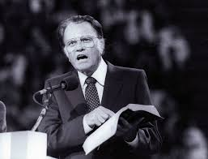

A Tribute to Billy Graham
The Great Legitimator...(1918-2018)

Billy Graham at a Crusade
His brief biography is as follows:
- 1918: He was born on November 7, 1918 in Charlotte, North Carolina
- 1943: On August 13, 1943, Graham married Wheaton classmate Ruth Bell, whose parents were Presbyterian missionaries in China. From 1943–44, Graham briefly served as pastor of the First Baptist Church in Western Springs, Illinois, which was not far from Wheaton.
- 1949: He was ordained a Southern Baptist minister and became known internationally. He was viewed as one of the most influential preachers of the 20th century
- 1950: Graham founded the Billy Graham Evangelistic Association (BGEA) with its headquarters in Minneapolis. He hosted a popular radio show Hour of Decision from 1950 to 1954
- 1953: He insisted on racial integration for his revivals and crusades in 1953
- 1955: Graham was repeatedly on Gallup's list of most admired men and women. He appeared on the list 60 times since 1955, more than any other individual in the world.
- 1957: He invited Martin Luther King Jr. to preach jointly at a revival in New York City in 1957
- 1960: Graham bailed King out of jail in the 1960s when King was arrested during demonstrations.
- 1967: In 1967, he was the first Protestant to receive an honorary degree from Belmont Abbey College, a Roman Catholic school
- 1984: In 1984, Graham led a series of meetings in the United Kingdom summer, called Mission England, using outdoor football (soccer) grounds as venues.
- 1988: Graham appeared in China in 1988
- 1989: On October 15, 1989, Graham received a star on the Hollywood Walk of Fame. Graham was the only minister, functioning in that capacity, to receive one.
- 1991: On September 22, 1991, Graham held his largest event in North America on the Great Lawn of New York's Central Park. City officials estimated more than 250,000 in attendance.
- 1992: He appeared in North Korea in 1992.
- 1995: He spoke at the memorial service following the Oklahoma City bombing in 1995.
- 1999: The Billy Graham Evangelistic Association (BGEA) relocated to Charlotte, North Carolina, in 1999.
- 2001: On September 14, 2001, only three days after the World Trade Center attacks, Graham was invited to lead a service at Washington National Cathedral, which was attended by President George W. Bush and past and present leaders. In the same year, Queen Elizabeth II awarded him an honorary knighthood. The honour was presented to him by Sir Christopher Meyer, British Ambassador to the U.S. at the British Embassy in Washington D.C. on December 6, 2001.
- 2005 - 2006: On June 24–26, 2005, Billy Graham began what he has said would be his last North American crusade, three days at the Flushing Meadows–Corona Park in New York City. But on the weekend of March 11–12, 2006, Billy Graham held the "Festival of Hope" with his son, Franklin Graham. The festival was held in New Orleans, which was recovering from Hurricane Katrina.
- 2008: As of 2008, Graham's estimated lifetime audience, including radio and television broadcasts, topped 2.2 billion.
- 2013: In April 2013, the Billy Graham Evangelistic Association started "My Hope With Billy Graham", the largest outreach in its history, encouraging church members to spread the gospel in small group meetings after showing a video message by Graham. The video, called "The Cross", is the main program in the My Hope America series and was also broadcast the week of Graham's 95th birthday.
- 2017: Graham's My Answer advice column has appeared in newspapers for more than 60 years as of 2017
- 2018: Graham died of natural causes on February 21, 2018, at his home in Montreat, North Carolina, at the age of 99
To know more you can check out Wikipedia